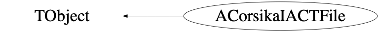

Function Members (Methods)
public:
| virtual | ~ACorsikaIACTFile() |
| void | TObject::AbstractMethod(const char* method) const |
| ACorsikaIACTFile(Int_t bufferLenght = 20000000) | |
| ACorsikaIACTFile(const ACorsikaIACTFile&) | |
| virtual void | TObject::AppendPad(Option_t* option = "") |
| virtual void | TObject::Browse(TBrowser* b) |
| static TClass* | Class() |
| virtual const char* | TObject::ClassName() const |
| virtual void | TObject::Clear(Option_t* = "") |
| virtual TObject* | TObject::Clone(const char* newname = "") const |
| void | Close() |
| virtual Int_t | TObject::Compare(const TObject* obj) const |
| virtual void | TObject::Copy(TObject& object) const |
| virtual void | TObject::Delete(Option_t* option = "")MENU |
| virtual Int_t | TObject::DistancetoPrimitive(Int_t px, Int_t py) |
| virtual void | TObject::Draw(Option_t* option = "") |
| virtual void | TObject::DrawClass() constMENU |
| virtual TObject* | TObject::DrawClone(Option_t* option = "") constMENU |
| virtual void | TObject::Dump() constMENU |
| virtual void | TObject::Error(const char* method, const char* msgfmt) const |
| virtual void | TObject::Execute(const char* method, const char* params, Int_t* error = 0) |
| virtual void | TObject::Execute(TMethod* method, TObjArray* params, Int_t* error = 0) |
| virtual void | TObject::ExecuteEvent(Int_t event, Int_t px, Int_t py) |
| virtual void | TObject::Fatal(const char* method, const char* msgfmt) const |
| virtual TObject* | TObject::FindObject(const char* name) const |
| virtual TObject* | TObject::FindObject(const TObject* obj) const |
| TTree* | GetBunches() const |
| virtual Option_t* | TObject::GetDrawOption() const |
| static Long_t | TObject::GetDtorOnly() |
| ACorsikaIACTEventHeader* | GetEventHeader() const |
| const Char_t* | GetFileName() const |
| virtual const char* | TObject::GetIconName() const |
| virtual const char* | TObject::GetName() const |
| Int_t | GetNumberOfTelescopes() const |
| virtual char* | TObject::GetObjectInfo(Int_t px, Int_t py) const |
| static Bool_t | TObject::GetObjectStat() |
| virtual Option_t* | TObject::GetOption() const |
| ARayArray* | GetRayArray(Int_t telNo, Int_t arrayNo, Double_t zoffset, Double_t refractiveIndex) |
| ACorsikaIACTRunHeader* | GetRunHeader() const |
| Double_t | GetTelescopeR(Int_t i) const |
| Double_t | GetTelescopeX(Int_t i) const |
| Double_t | GetTelescopeY(Int_t i) const |
| Double_t | GetTelescopeZ(Int_t i) const |
| virtual const char* | TObject::GetTitle() const |
| virtual UInt_t | TObject::GetUniqueID() const |
| virtual Bool_t | TObject::HandleTimer(TTimer* timer) |
| virtual ULong_t | TObject::Hash() const |
| virtual void | TObject::Info(const char* method, const char* msgfmt) const |
| virtual Bool_t | TObject::InheritsFrom(const char* classname) const |
| virtual Bool_t | TObject::InheritsFrom(const TClass* cl) const |
| virtual void | TObject::Inspect() constMENU |
| void | TObject::InvertBit(UInt_t f) |
| virtual TClass* | IsA() const |
| Bool_t | IsAllocated() |
| virtual Bool_t | TObject::IsEqual(const TObject* obj) const |
| virtual Bool_t | TObject::IsFolder() const |
| Bool_t | TObject::IsOnHeap() const |
| Bool_t | IsOpen() |
| virtual Bool_t | TObject::IsSortable() const |
| Bool_t | TObject::IsZombie() const |
| virtual void | TObject::ls(Option_t* option = "") const |
| void | TObject::MayNotUse(const char* method) const |
| virtual Bool_t | TObject::Notify() |
| void | TObject::Obsolete(const char* method, const char* asOfVers, const char* removedFromVers) const |
| void | Open(const Char_t* fname) |
| void | TObject::operator delete(void* ptr) |
| void | TObject::operator delete(void* ptr, void* vp) |
| void | TObject::operator delete[](void* ptr) |
| void | TObject::operator delete[](void* ptr, void* vp) |
| void* | TObject::operator new(size_t sz) |
| void* | TObject::operator new(size_t sz, void* vp) |
| void* | TObject::operator new[](size_t sz) |
| void* | TObject::operator new[](size_t sz, void* vp) |
| ACorsikaIACTFile& | operator=(const ACorsikaIACTFile&) |
| virtual void | TObject::Paint(Option_t* option = "") |
| virtual void | TObject::Pop() |
| virtual void | TObject::Print(Option_t* option = "") const |
| void | PrintInputCard() const |
| virtual Int_t | TObject::Read(const char* name) |
| Int_t | ReadEvent(Int_t num) |
| virtual void | TObject::RecursiveRemove(TObject* obj) |
| void | TObject::ResetBit(UInt_t f) |
| virtual void | TObject::SaveAs(const char* filename = "", Option_t* option = "") constMENU |
| virtual void | TObject::SavePrimitive(ostream& out, Option_t* option = "") |
| void | TObject::SetBit(UInt_t f) |
| void | TObject::SetBit(UInt_t f, Bool_t set) |
| virtual void | TObject::SetDrawOption(Option_t* option = "")MENU |
| static void | TObject::SetDtorOnly(void* obj) |
| void | SetMaxPhotonBunches(UInt_t max) |
| static void | TObject::SetObjectStat(Bool_t stat) |
| virtual void | TObject::SetUniqueID(UInt_t uid) |
| virtual void | ShowMembers(TMemberInspector& insp) const |
| virtual void | Streamer(TBuffer&) |
| void | StreamerNVirtual(TBuffer& ClassDef_StreamerNVirtual_b) |
| virtual void | TObject::SysError(const char* method, const char* msgfmt) const |
| Bool_t | TObject::TestBit(UInt_t f) const |
| Int_t | TObject::TestBits(UInt_t f) const |
| virtual void | TObject::UseCurrentStyle() |
| virtual void | TObject::Warning(const char* method, const char* msgfmt) const |
| virtual Int_t | TObject::Write(const char* name = 0, Int_t option = 0, Int_t bufsize = 0) |
| virtual Int_t | TObject::Write(const char* name = 0, Int_t option = 0, Int_t bufsize = 0) const |
protected:
| virtual void | TObject::DoError(int level, const char* location, const char* fmt, va_list va) const |
| void | TObject::MakeZombie() |
private:
| Int_t | ReadNextBlock() |
Data Members
public:
| static TObject::(anonymous) | TObject::kBitMask | |
| static TObject::EStatusBits | TObject::kCanDelete | |
| static TObject::EStatusBits | TObject::kCannotPick | |
| static TObject::EStatusBits | TObject::kHasUUID | |
| static TObject::EStatusBits | TObject::kInvalidObject | |
| static TObject::(anonymous) | TObject::kIsOnHeap | |
| static TObject::EStatusBits | TObject::kIsReferenced | |
| static TObject::EStatusBits | TObject::kMustCleanup | |
| static TObject::EStatusBits | TObject::kNoContextMenu | |
| static TObject::(anonymous) | TObject::kNotDeleted | |
| static TObject::EStatusBits | TObject::kObjInCanvas | |
| static TObject::(anonymous) | TObject::kOverwrite | |
| static TObject::(anonymous) | TObject::kSingleKey | |
| static TObject::(anonymous) | TObject::kWriteDelete | |
| static TObject::(anonymous) | TObject::kZombie |
private:
| IO_ITEM_HEADER | fBlockHeader | |
| TTree* | fBunches | |
| struct linked_string | fCorsikaInputs | |
| ACorsikaIACTEventHeader* | fEventHeader | |
| TString | fFileName | |
| IO_BUFFER* | fIOBuffer | |
| Int_t | fMaxPhotonBunches | |
| Double_t | fMaxWavelength | |
| Double_t | fMinWavelength | |
| Int_t | fNumberOfTelescopes | |
| ACorsikaIACTRunHeader* | fRunHeader | |
| Double_t* | fTelescopePosition[4] | |
| static const Int_t | kMaxArrays | |
| static const Int_t | kMaxTelescopes |
Class Charts
{kind=link}
{kind=link}
{kind=link}
{kind=link}

Function documentation
ACorsikaIACTFile(Int_t bufferLenght = 20000000)
void Close()
ARayArray* GetRayArray(Int_t telNo, Int_t arrayNo, Double_t zoffset, Double_t refractiveIndex)
z is the starting position of photons relative to the CORSIKA observation level
Double_t GetTelescopeR(Int_t i) const
Double_t GetTelescopeX(Int_t i) const
Double_t GetTelescopeY(Int_t i) const
Double_t GetTelescopeZ(Int_t i) const
void PrintInputCard() const
ACorsikaIACTFile(Int_t bufferLenght = 20000000)